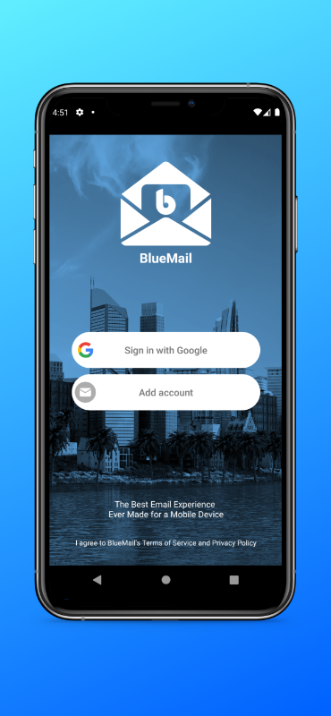
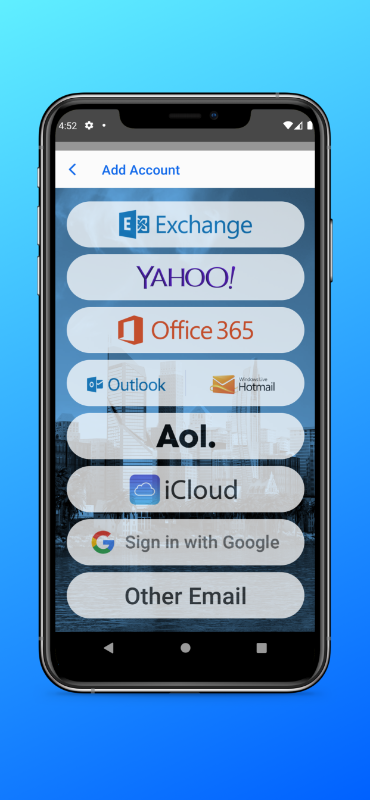
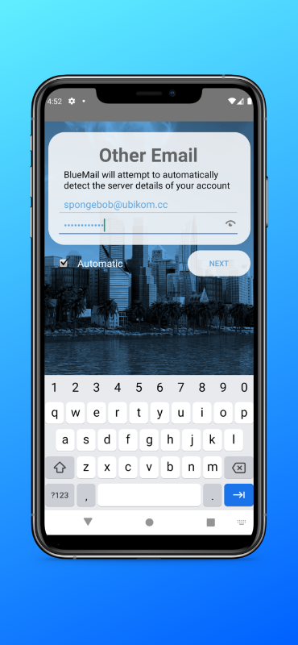
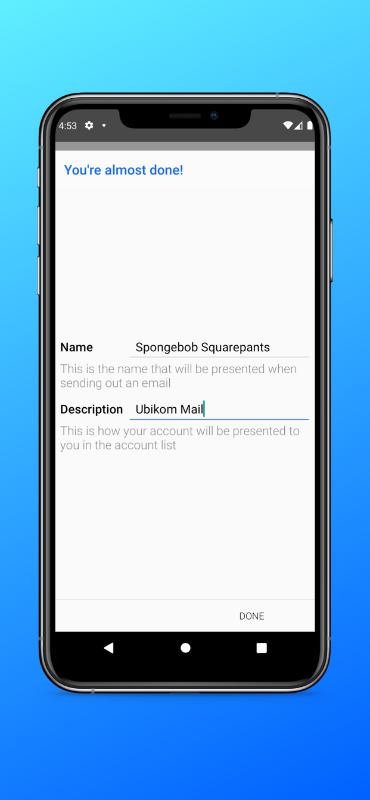
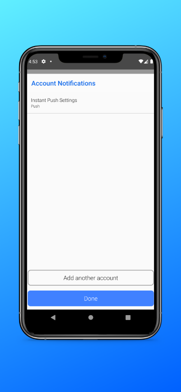

Unlike iOS, Android does not have an email app (apart from GMail) packaged with the system. You will have to install one of the following clients to be able to use Ubikom Mail.
Important things to notice are:
We recommend Blue Mail because it's a great email client, it works on any platform (mobile and desktop), and it configures automatically using your email and password (download).
Open the app. You will be asked to set up new account.

Tap "Add Account".

Tap "Other Email".

Enter your email and password. Your email is your identifier plus "@ubikom.cc".

Enter your name and account description. Your name can be anything (email recipients will see it).

Leave settings as they are and tap "Done".
K-9 is a bit old, but still excellent.
You can download K-9 Mail here.
On "Set up a new account" screen, enter your email address, i.e. "bob@ubikom.cc", and your password. Tap "Next".
For Account type, choose "IMAP".
On "Incoming server settings" screen, enter the following:
On "Outgoing server settings" screen, enter the following:
On the next screen ("Account options") you can choose how frequently you want the app to check for changes, and how many messages to display. Choose your settings and tap "Next".
Finally, enter account name ("Ubikom Mail" will do), and your name as you want it to appear to message recipients. Tap "Done".
If your setup doesn't work, double-check your settings. You might want to delete this account completely and try to set it up again.
Check the list of known issues here. If you think you have found a bug, submit a new issue, or email lgx@ubikom.cc.